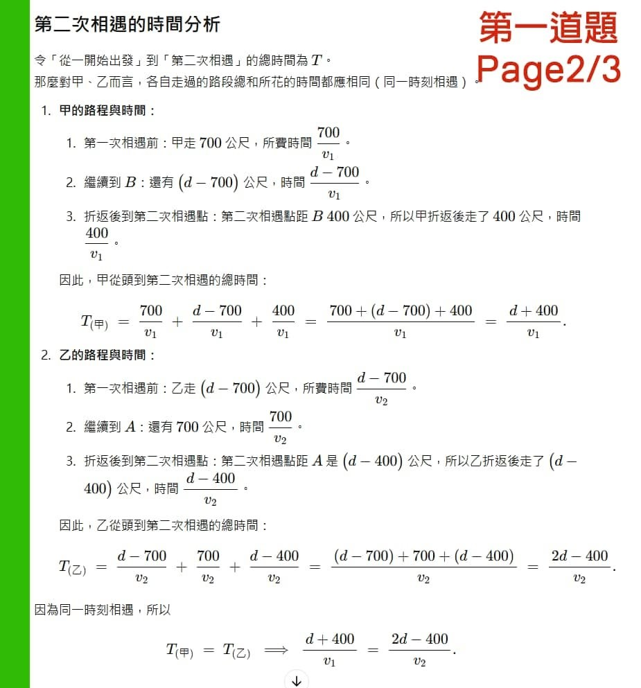

AI年代的未來生存之道
AI的「智力」持續進化 且速度驚人。
獵豹用幾道國中程度的「困難」應用問題測試目前在數學推理最強大的AI模型：
ChatGPT O1
這三道題都有一個特徵：可以用「人類特有」的創意思考（某種別出心裁的觀點/角度）非常「簡單」的一條式子便求出答案。
當然 我們不預期目前的AI可以如此思考（否則AI似乎已經具備了「意識」，加上它們高超的運算能力，統治地球的日子不遠矣‼️)
但仍令人驚嘆不已，AI畢竟將自然語言完美的轉化成數學式，而且在繁複的邏輯替換中，沒有犯錯，順利完成任務，給出了正確答案‼️
它使用了與人類不同風格的「思考」，繁複的步驟對它似乎不是問題！
這樣的智力方向與進化速度，我們很難對它的潛力以及未來可以達到的高度做出預測！
這是非常令人驚恐的！
它對程序化步驟的超級能力，取代大多數目前程式設計師的工作，幾乎是必然且為期不遠。
未來的幾十年，AI革命勢必對人類的產業、工作型態、方式與職場產生翻天覆地的影響！
我會對獵豹的孩子說：學習人類如何解決這三道問題的那些創意與思維能力，是與AI競爭的唯一生存之道！
